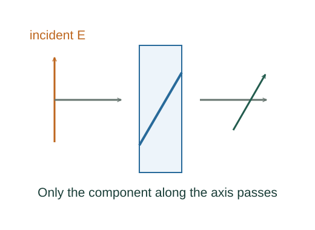
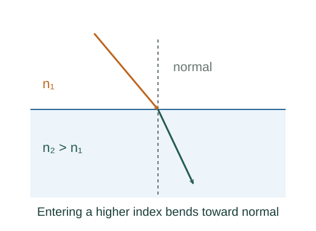

Derive Malus’s law, Snell’s law and special angles
An ideal polarizer transmits the field component along its transmission direction. Intensity scales as amplitude squared.
What the symbols mean
θ: angle between polarization and transmission axis; ni: refractive indices; θi: ray angles from boundary normal.
When this applies
Ideal polarizer, stationary plane interface, isotropic transparent media; critical angle requires n₁ > n₂; Brewster formula assumes nonmagnetic dielectrics.

Project the incident electric amplitude
An ideal polarizer transmits the field component along its transmission direction. Intensity scales as amplitude squared.
Average random polarization
Unpolarized light has uniformly distributed polarization directions. The average cos²θ is ½.
Match phase along an interface
All points on a stationary boundary must share the same tangential phase and time frequency. Thus tangential wavenumbers match; with k = nω/c this gives refraction.

Set the grazing transmitted angle
At the limit θ₂ = 90°, Snell’s law gives the critical angle. Frequency remains unchanged while medium speed becomes c/n, so wavelength becomes λ₀/n.
Cancel the parallel reflected field
For nonmagnetic dielectrics the parallel-polarization Fresnel numerator is n₂cos θ₁ − n₁cos θ₂. Setting it to zero together with Snell’s law gives θ₁ + θ₂ = 90° and tan θB = n₂/n₁.
Where each equation comes from
Derived equations link to an argument below. Definitions, physical postulates and constitutive models are identified as the inputs of that argument.
Derivation of the main resultDerived result
Conditions: Ideal polarizer, stationary plane interface, isotropic transparent media; critical angle requires n₁ > n₂; Brewster formula assumes nonmagnetic dielectrics.
- Project the incident electric amplitude. An ideal polarizer transmits the field component along its transmission direction. Intensity scales as amplitude squared. Explain the equation used in step 1 ↗
- Average random polarization. Unpolarized light has uniformly distributed polarization directions. The average cos²θ is ½. Explain the equation used in step 2 ↗
- Match phase along an interface. All points on a stationary boundary must share the same tangential phase and time frequency. Thus tangential wavenumbers match; with k = nω/c this gives refraction. Explain the equation used in step 3 ↗
- Set the grazing transmitted angle. At the limit θ₂ = 90°, Snell’s law gives the critical angle. Frequency remains unchanged while medium speed becomes c/n, so wavelength becomes λ₀/n. Explain the equation used in step 4 ↗
- Cancel the parallel reflected field. For nonmagnetic dielectrics the parallel-polarization Fresnel numerator is n₂cos θ₁ − n₁cos θ₂. Setting it to zero together with Snell’s law gives θ₁ + θ₂ = 90° and tan θB = n₂/n₁. Explain the equation used in step 5 ↗
Equation in step 1Derived result
What is being shown: Project the incident electric amplitude
An ideal polarizer transmits the field component along its transmission direction. Intensity scales as amplitude squared.
Starting conditions and inputs: Ideal polarizer, stationary plane interface, isotropic transparent media; critical angle requires n₁ > n₂; Brewster formula assumes nonmagnetic dielectrics.
Equation in step 2Derived result
What is being shown: Average random polarization
Unpolarized light has uniformly distributed polarization directions. The average cos²θ is ½.
Earlier results used in this argument:
- Etransmitted = E₀cos θ ⇒ I = I₀cos²θ (Derived result)
Equation in step 3Derived result
What is being shown: Match phase along an interface
All points on a stationary boundary must share the same tangential phase and time frequency. Thus tangential wavenumbers match; with k = nω/c this gives refraction.
Earlier results used in this argument:
- Etransmitted = E₀cos θ ⇒ I = I₀cos²θ (Derived result)
- Iunpolarized,out = I₀/2 (Derived result)
Equation in step 4Derived result
What is being shown: Set the grazing transmitted angle
At the limit θ₂ = 90°, Snell’s law gives the critical angle. Frequency remains unchanged while medium speed becomes c/n, so wavelength becomes λ₀/n.
Earlier results used in this argument:
- Etransmitted = E₀cos θ ⇒ I = I₀cos²θ (Derived result)
- Iunpolarized,out = I₀/2 (Derived result)
- k₁sin θ₁ = k₂sin θ₂ ⇒ n₁sin θ₁ = n₂sin θ₂ (Derived result)
Equation in step 5Derived result
What is being shown: Cancel the parallel reflected field
For nonmagnetic dielectrics the parallel-polarization Fresnel numerator is n₂cos θ₁ − n₁cos θ₂. Setting it to zero together with Snell’s law gives θ₁ + θ₂ = 90° and tan θB = n₂/n₁.
Earlier results used in this argument:
- Etransmitted = E₀cos θ ⇒ I = I₀cos²θ (Derived result)
- Iunpolarized,out = I₀/2 (Derived result)
- k₁sin θ₁ = k₂sin θ₂ ⇒ n₁sin θ₁ = n₂sin θ₂ (Derived result)
- sin θc = n₂/n₁; λmedium = λ₀/n (Derived result)
A worked example
An ideal polarizer crossed by 60° to already polarized light transmits one quarter of its incident intensity.
Derivation behind this calculation ↗A point to keep straight
Brewster’s formula depends on the electromagnetic boundary conditions, not Snell’s law alone.
Check the assumptions and derivation ↗